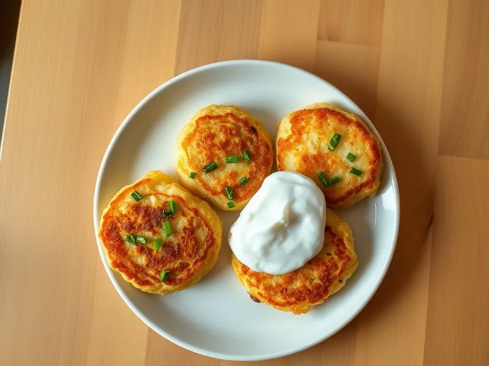

Фото: Иллюстрация ИИ, Cloudflare Workers AI
Картофельные оладьи из вчерашнего пюре с сыром
Румяные оладьи из оставшегося пюре с сыром и зелёным луком
20 мин2 порц.530 ккал на порциюБ 17 · Ж 29 · У 50Русская кухня
Открыть в приложении: порции, таймеры, список покупок
Продукты на 2 порц.
- Картофель отварной / пюре (остался)400 г
- Яйцо куриное1 шт
- Мука пшеничная2 ст. л.
- Сыр твёрдый50 г
- Зелёный лук0,5 пучка
- Растительное масло2 ст. л.
- Соль1 щеп.
- Сметана 20% по желанию3 ст. л.
Как готовить
- Натрите сыр на мелкой тёрке, мелко нарежьте зелёный лук, 3 минуты.
- Смешайте холодное пюре с яйцом, мукой, сыром и луком, посолите. Масса должна держать форму на ложке.
- Разогрейте масло на сковороде на среднем огне 1-2 минуты.
- Выкладывайте массу ложкой, приплющивайте в лепёшки толщиной около 1 см.
- Жарьте по 3-4 минуты с каждой стороны на среднем огне до золотистой корочки.
- Подавайте горячими со сметаной.
Совет. Если пюре жидкое, добавьте ещё 1-2 ст. л. муки, иначе оладьи расплывутся. Переворачивайте, только когда низ схватится корочкой.